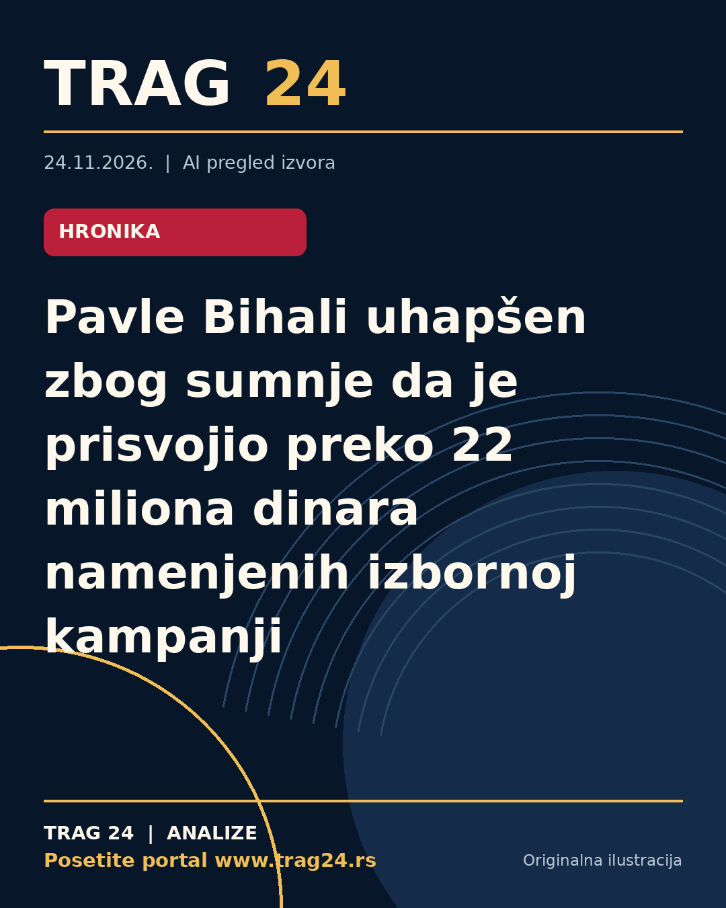

Pavle Bihali uhapšen zbog sumnje da je prisvojio preko 22 miliona dinara namenjenih izbornoj kampanji

ŠTA SE DOGODILO
Policija je uhapsila Pavla Bihalija, poznatog kao lider pokreta Levijatan i ovlašćeno lice koalicije 'Ruski manjinski savez', zbog sumnje da je pribavio sebi više od 22,5 miliona dinara namenjenih za finansiranje izborne kampanje na parlamentarnim i gradskim izborima održanim 3. aprila 2022. godine. Tužilaštvo sumnja da je novac, koji je stigao iz budžeta Republike Srbije i Grada Beograda, umesto za kampanju, Bihali prebacio na lični račun i podigao u gotovini.
HRONOLOGIJA
Novac je na namenski račun Srpsko-ruskog pokreta uplaćen 13. maja i 8. jula 2022. godine. Istog ili nekoliko dana nakon uplate, sumnja je da je Pavle Bihali prebacio više od 22 miliona dinara na svoj lični račun i podigao ih. Hapšenje je izvršeno po nalogu Posebnog odeljenja za suzbijanje korupcije Višeg javnog tužilaštva u Beogradu. Nakon zadržavanja do 48 sati, Bihali će biti priveden na saslušanje radi dalje istrage.
ŠTA NAVODE IZVORI
Više javno tužilaštvo u Beogradu saopštilo je da se Bihali tereti za zloupotrebu položaja odgovornog lica i falsifikovanje isprave, jer je, prema saznanjima tužilaštva, podneo lažni izveštaj Agenciji za sprečavanje korupcije o troškovima kampanje, navodeći da su ti troškovi oko 2 miliona dinara, dok je stvarni novac ostao neiskorišćen i prisvojen. Istovremeno, mediji ističu da se Bihali već godinama javno ističe kao kontroverzni politički aktivista i vođa ekstremno desničarskog pokreta Levijatan, koji je u prošlosti istupao i u kontekstu zaštite životinja i političkih tema.
ŠTA JE POTVRĐENO
Hapšenje Pavla Bihalija zbog sumnje u prisvajanje više od 22 miliona dinara namenjenih izbornoj kampanji. Po nalogu Višeg javnog tužilaštva u Beogradu sprovedena je policijska akcija. Postoje zvanični podaci o uplatama iz republičkog i gradskog budžeta, kao i sumnje u nepravilnu upotrebu tih sredstava. Na teret mu se stavljaju krivična dela zloupotreba položaja i falsifikovanje isprave.
ŠTA NIJE POTVRĐENO
Do sada nema zvaničnih informacija o eventualnoj odbrani Pavla Bihalija, kao ni konačne presude ili pravno potvrđenog činjeničnog stanja u ovom slučaju. Takođe, medijski navodi o njegovim ranijim političkim aktivnostima i izjavama služe za dodatni kontekst, ali nisu pravno dokazani kao motiv ili sredstvo za zloupotrebu novca. Nije potvrđeno da li je novac u potpunosti potrošen ili sačuvan nekim drugim načinom.
ŠTA OSTАJE OTVORENO: Istraga je u toku, a ključna pitanja ostaju o eventualnim drugim licima uključenim u slučaj i preciznom korišćenju sredstava kojom se Bihali tereti da je nepravilno prisvojio. Takođe, ostaje pitanje eventualne pravne odgovornosti i daljeg toka sudskog procesa, kao i daljeg političkog statusa Pavla Bihalija i njegove organizacije.
Izvori
- https://www.nedeljnik.rs/pavle-bihali-uhapsen-zbog-sumnje-da-je-prisvojio-vise-od-225-miliona-dinara-namenjenih-izbornoj-kampanji/
- https://www.b92.net/info/hronika/287808/za-sta-se-tereti-pavle-bihali-oglasilo-se-tuzilastvo-pod-istragom-zbog-225-miliona-dinara/vest
- https://www.danas.rs/vesti/drustvo/ko-je-pavle-bihali-biografija/
Ova analiza je pripremljena uz pomoć veštačke inteligencije na osnovu javno dostupnih izvora. Navodi izvora nisu nužno nezavisno potvrđeni.